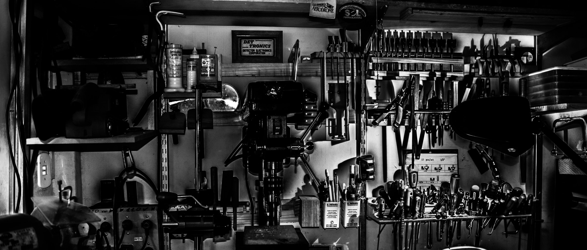

About Toolshed
Toolshed started with a simple question: Why should we all hold onto so many tools we barely ever use and barely maintain, just taking up space in our garages and sheds, waiting around for those stray moments when we need them? There had to be a better way.
Enter the Toolshed
We decided what the world needed was one big toolshed that we could all share together. Staffed by a team of experts why keep everything in tip-top shape, ready for you to use.
That’s what we’ve built and we can’t wait to share it with you.
Our Founders
Jannie Appletone
Janine started out as a custom furniture manufacturer, but she quickly grew frustrated at having to spend a thousand dollars every time she needed a new specialty tool. That’s when the idea for Toolshed was born.
If we can have ride sharing and scooter sharing, I don’t see why we shouldn’t have tool sharing too.”Janine Appleton
Common Questions
What if I don’t know how to work a tool?
Our experts provide guides, videos, and live chat to help you get going on anything and everything.
What if a tool doesn’t work?
No problem. Let us know what’s up and send it back. We’ll get you a replacement in no time flat.
What if I break something?
Our rental insurance option protects you and covers the cost of the tool.